| 日付 | 2020年11月8日（日） |
|---|---|
| 山域 | 西上州 |
| メンバー | 家族（妻、長女・9歳、長男・7歳） |
| 山行形態 | 子連れ日帰り |
| アクセス | 車 |
| ルート (Map) | 萱倉橋 (8:39) - (9:12) 高立一本岩 (9:21) - (9:52) 萱倉橋 (10:03) - (11:12) 登山口 - (11:34) 本当の登山口 - (11:57) 御場山 (12:43) - (12:59) 本当の登山口 - (13:14) 登山口 - (14:01) 萱倉橋 |
昔から使っているガイドブックに御場山と言う山が載っている。
少し気になる山だったのだが、アクセスが悪く、
車道歩きが長い山でなかなか登る機会がなかった。
しかし、いつまでも未踏峰のまま残しておくわけにもいかず、
北関東が晴れの週末に訪れてみることにする。
車道の広くなっている路肩に車を停める。標高610m。
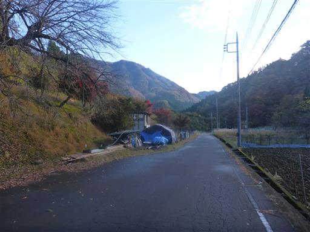
駐車場所からは異様な山容の御場山が良く目立つ。
周囲を岩壁に囲まれた要塞のような山だ。

御場山に向かう前に、まずは高立一本岩を見に行く。
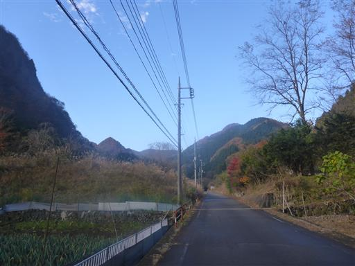
左手に見えるとんがり山。何という山だろう？どこかの尾根の末端かもしれない。
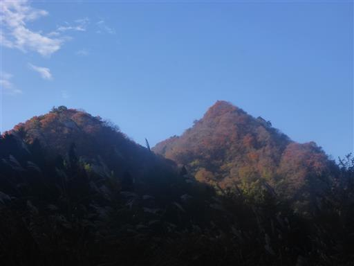
車道終点の一軒家。ここからは林道歩きだ。
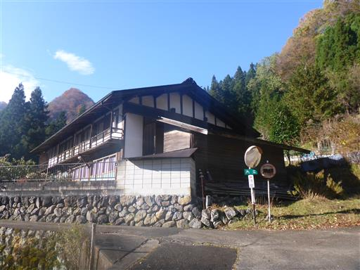
暗い林道の中で陽の光を浴びて輝く木。
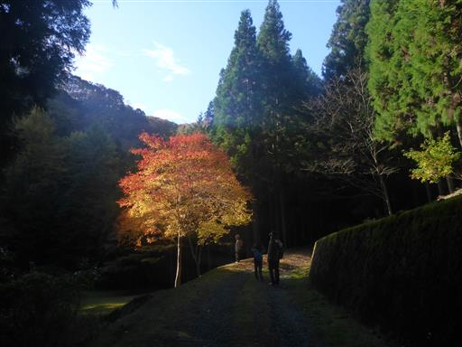
車道は若干荒れている。落石もあるが、車で入れなくはない。
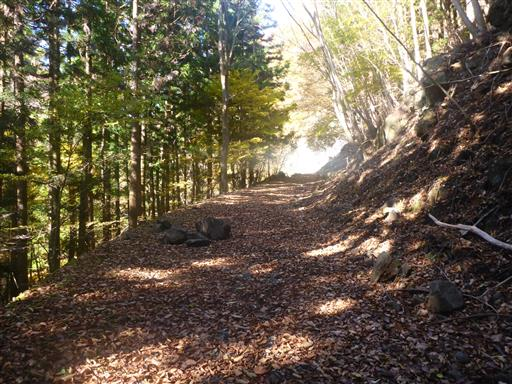
歩くこと30分、高立一本岩の展望ポイントに到着。
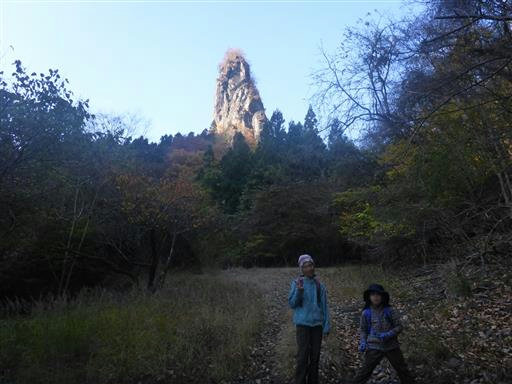
見事な岩峰。田舎の集落の奥にひっそりと存在する。
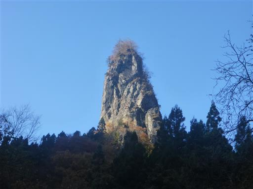
近くに丸い岩があり、鎖があって登れるようになっている。
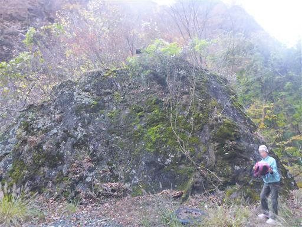
早速登ってみる。岩は湿っていて結構滑る。
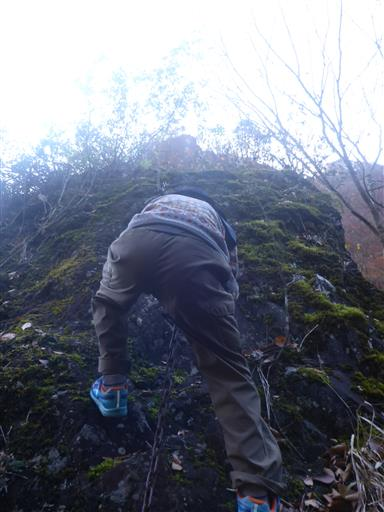
岩の上には祠がある。
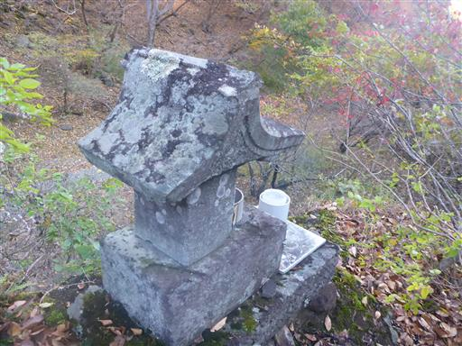
残念ながら岩の上からの景色は、下からと大して変化がない。
むしろ木の枝が覆いかぶさって邪魔だ。
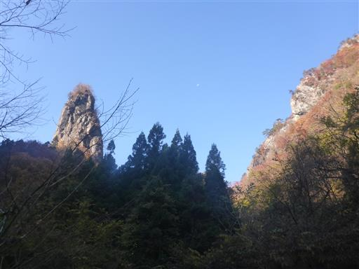
高立一本岩を見学したら車に戻る。
高台から見下ろす集落と周囲の山々が美しい。
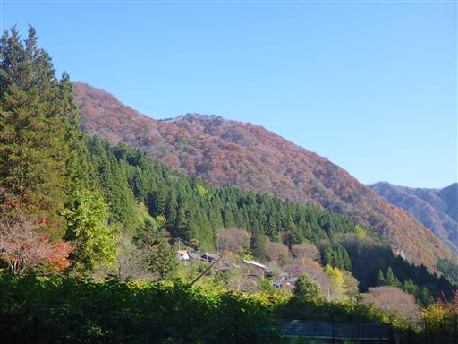
ネットに虫がつかまっている。日向ぼっこだろうか？
他にもいるので何か目的があってここにいるのだろう。
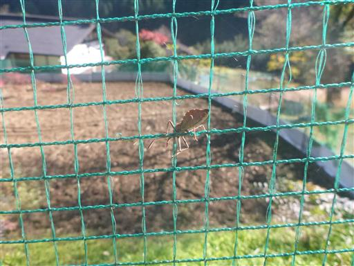
この辺りはモミジの木が多い。
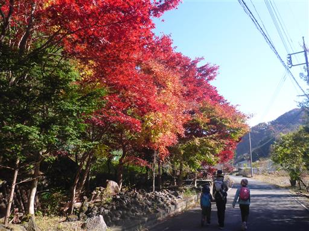
紅葉真っ盛りで見事な赤色だ。
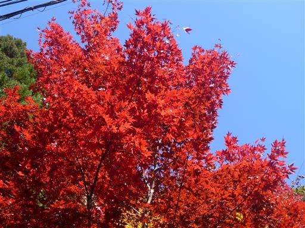
車に戻って登山靴に履き替えたら御場山への登山開始。

この先の車道は以前は車で入れたが、今は全面通行止になっている。

ここからも遠くに高立一本岩の頭が見える。
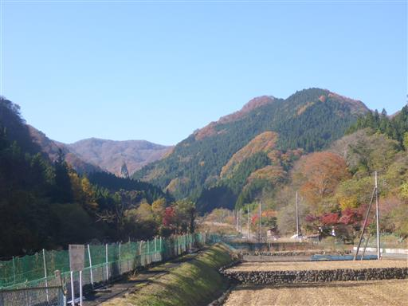
長い長い林道歩き。工事現場を通過する。
通行止の理由はこの工事だろうか？
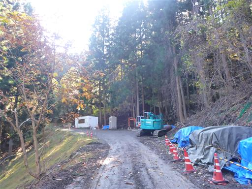
この辺りは明るく開けていて雰囲気の良い場所だ。
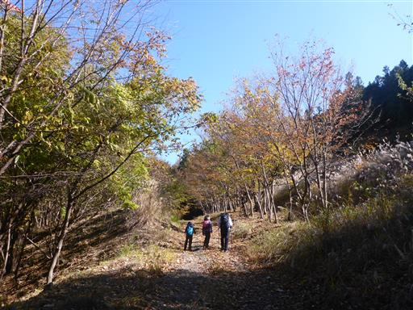
ススキの向こうにこれから向かう御場山が見える。
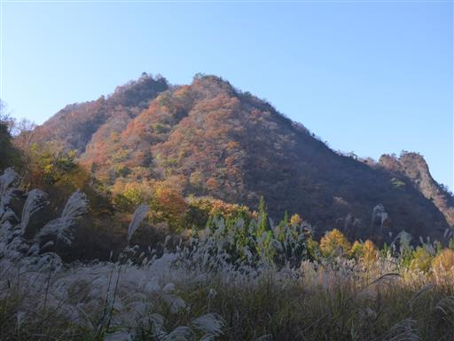
歩くこと1時間、ようやく登山口に到着する。
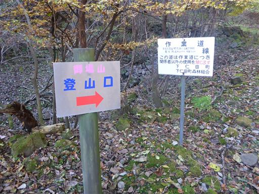
しかしその後も荒れた車道歩きが続く。
山と高原地図を見る限り車道歩きにはなっていないが、実質は車道歩きだ。
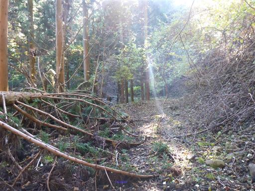
20分歩いてようやく本当の登山口に到着する。
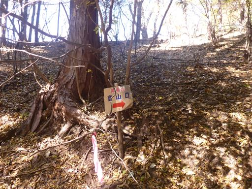
ここからはとんでもない急斜面登山道が始まる。
斜面が急と言うより足を置くステップが無く、とてつもなく登りにくい。
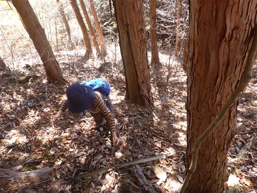
ピンクのリボンが定期的に付けられており、迷うことはない。
しかしかなり雑な登山道の付け方だ。
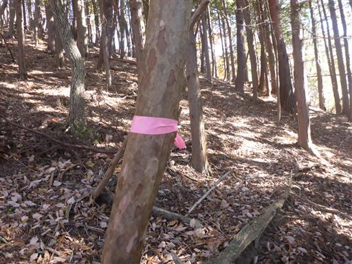
御場山の山頂に到着する。標高1059m。
登山口からはたった20分強だった。
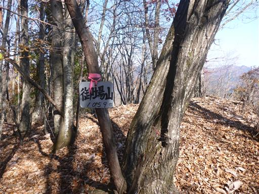
山頂からは東面の展望が広がる。
まず目に飛び込んでくるのは一目でそれと分かる妙義山。
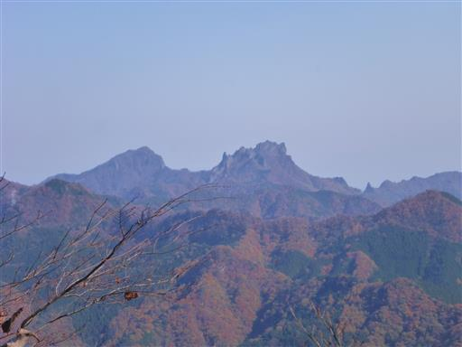
周辺の山々。西上州らしいでこぼこした山が多い。
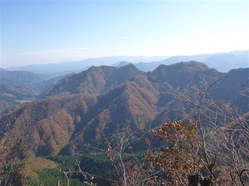
斜面の紅葉が美しい。西上州は新緑・紅葉ともに見ごたえがある。
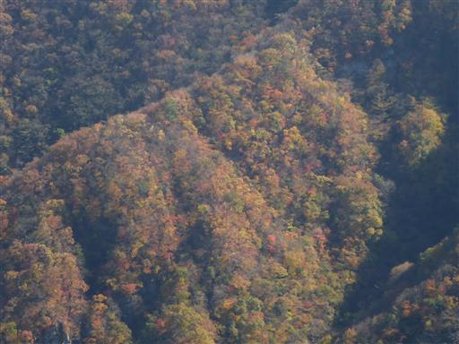
帰りも急斜面を苦労しながら下る。
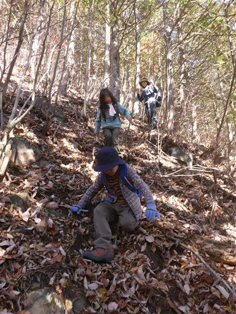
15分で車道に降り立つ。ここからはまた長い長い車道歩きだ…
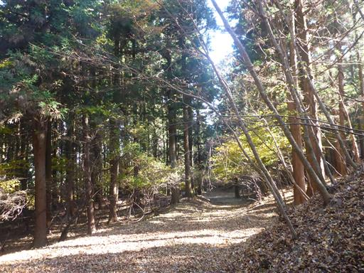
この先にもまだ林道が続いているように見える。
地図には載っていないが一体どこに通じているのだろうか？

ススキと紅葉の山を見ながら、ダラダラと車道を歩く。
子供達は景色が目に入らないので、しりとりをやる。
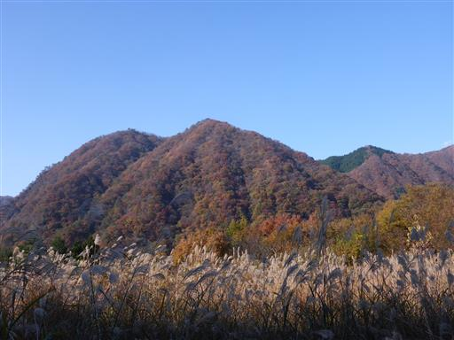
最後に橋を渡ってようやく下山。
西上州の風景と、山頂からの周囲の山々の風景、そして紅葉は素晴らしかった。
一方車道歩きがあまりにも長すぎて、ほとんど山登りができなかったのは残念だった。
見た目が良い山であり、良い登山道を付けてほしいところだ。
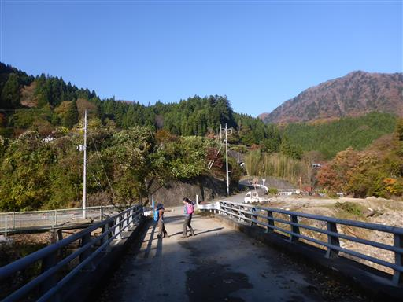